内网渗透 | NPS内网穿透工具的使用
一、NPS工具介绍
NPS工具是一款使用go语言编写的轻量级、功能强大的内网穿透工具。支持TCP、UDP流量转发，支持内网HTTP、SOCKS5代理，同时支持snappy压缩(节省带宽和流量)、站点保护、加密传输、多路复用、header修改等。同时还支持web图形化管理。该工具使用简单，相比于FRP，NPS是图形化界面，因此配置更加简单。
二、NPS工具原理介绍
注意:NPS工具的工作原理和FRP工具的工作原理相似，因此我们只需要对其中某一款工具的原理十分熟悉即可，由于之前写过一篇十分详细的FRP的工作原理和使用方法，因此，在这不再赘述，大家可以去看这篇文章:
1.NPS客户端和服务器端配置
NPS工具由NPS服务器端和NPS客户端组成，我们一般将NPS服务器端放在具有公网IP的VPS上，并且会开启一个端口等待NPS的客户端进行连接(一般会在NPS服务器的配置文件中进行说明)，而NPS的客户端一般会被放在我们已经拿下的内网主机上，我们会指定NPS服务器的客户端需要连接的NPS服务器的IP和端口，这样，我们就成功的将NPS的服务器端和NPS的客户端连接了起来。
2.通过NPS进行内网穿透
按照上面的方法，我们已经配置好了NPS服务，现在服务器端和客户端是可以连通的，但是，我们又怎么可以通过NPS进行内网穿透呢？其实，NPS是会在配置文件里面设置图形化界面的登录后台，我们通过登录NPS的后台，然后使用配置文件中设置的账号密码进行登录，登录后台之后，首先添加一个客户端，这个客户端会自动生成一个唯一验证密钥，我们需要在配置文件中输入这个唯一验证密钥，这样就可以将NPS的客户端和服务端连接起来了，随后我们可以根据我们的需求添加隧道，如HTTP隧道、SOCKS隧道等多条隧道，我们通过隧道设置的端口进行访问，即可访问到内网主机。
三、NPS配置
1.NPS下载链接
NPS下载链接:https://github.com/ehang-io/nps/releases/tag/v0.26.9NPS官方说明文档:https://ehang-io.github.io/nps/#/api
2.NPS服务端配置
(1):查看服务器版本
arch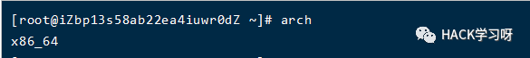
(2):下载对应版本的NPS服务器
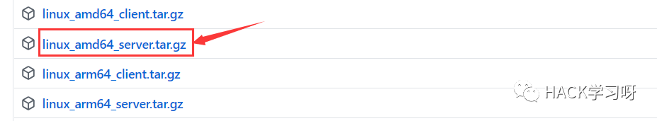
(3):上传到服务器端进行解压
tar -xvzf linux_amd64_server.tar.gz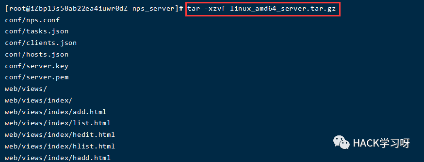
(4):安装NPS
./nps install #linuxnps.exe install #windows
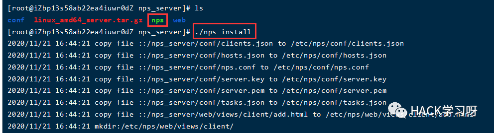
(5):查看配置文件
cd conf/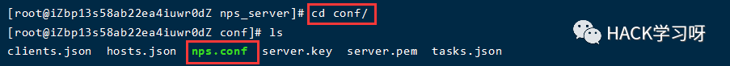
配置文件中的内容如下
appname = nps#Boot mode(dev|pro)runmode = dev#HTTP(S) proxy port, no startup if emptyhttp_proxy_ip=0.0.0.0http_proxy_port=80 #域名代理http代理监听端口https_proxy_port=443 #域名代理https代理监听端口(一般会修改这两个端口，避免端口冲突)https_just_proxy=true#default https certificate settinghttps_default_cert_file=conf/server.pemhttps_default_key_file=conf/server.key##bridgebridge_type=tcp #客户端与服务端连接方式kcp或tcpbridge_port=8024 #服务端客户端通信端口，也就是说客户端通过访问服务端的这个端口可以进行连接bridge_ip=0.0.0.0# Public password, which clients can use to connect to the server# After the connection, the server will be able to open relevant ports and parse related domain names according to its own configuration file.public_vkey=123 #客户端以配置文件模式启动时的密钥，设置为空表示关闭客户端配置文件连接模式#Traffic data persistence interval(minute)#Ignorance means no persistence#flow_store_interval=1 #服务端流量数据持久化间隔，单位分钟，忽略表示不持久化# log level LevelEmergency->0 LevelAlert->1 LevelCritical->2 LevelError->3 LevelWarning->4 LevelNotice->5 LevelInformational->6 LevelDebug->7log_level=7 #日志输出级别#log_path=nps.log#Whether to restrict IP access, true or false or ignore#ip_limit=true #是否限制ip访问，true或false或忽略#p2p#p2p_ip=127.0.0.1 #服务端IP，使用p2p模式必填#p2p_port=6000 #p2p模式开启的udp端口#webweb_host=a.o.comweb_username=admin #web界面管理账号web_password=123 #web界面管理密码web_port = 8080 #web管理端口，通过访问该端口可以访问NPS后台web_ip=0.0.0.0web_base_url= #web管理主路径,用于将web管理置于代理子路径后面web_open_ssl=falseweb_cert_file=conf/server.pemweb_key_file=conf/server.key# if web under proxy use sub path. like http://host/nps need this.#web_base_url=/nps#Web API unauthenticated IP address(the len of auth_crypt_key must be 16)#Remove comments if needed#auth_key=test #web api密钥auth_crypt_key =1234567812345678 #获取服务端authKey时的aes加密密钥，16位#allow_ports=9001-9009,10001,11000-12000#Web management multi-user loginallow_user_login=falseallow_user_register=falseallow_user_change_username=false#extensionallow_flow_limit=falseallow_rate_limit=falseallow_tunnel_num_limit=falseallow_local_proxy=falseallow_connection_num_limit=falseallow_multi_ip=falsesystem_info_display=false#cachehttp_cache=falsehttp_cache_length=100#get origin iphttp_add_origin_header=false#pprof debug options#pprof_ip=0.0.0.0 #debug pprof 服务端IP#pprof_port=9999 #debug pprof 端口#client disconnect timeoutdisconnect_timeout=60 #客户端连接超时，单位 5s，默认值 60，即 300s = 5mins
注意:在上面的配置文件中，我们主要是要注意以下方面:
①:一般会修改域名代理的端口，避免端口冲突
②:NPS的web页面默认端口是8080，默认用户名密码是admin/123
③:NPS的服务端和客户端进行连接的默认端口是8024，这个端口可以进行修改，修改之后，在连接时注意使用修改后的端口
④:NPS服务端开启的端口(也就是我们需要访问的VPS的端口)不在配置文件中，需要我们web界面中进行配置
3.NPS客户端配置
(1):下载对应版本的NPS客户端
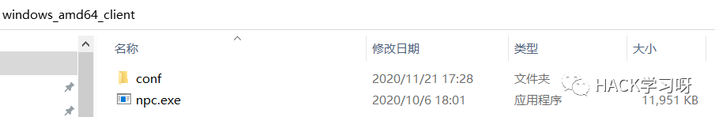
(2):客户端连接方式
①:使用vkey进行连接
Windows：npc.exe -server=ip:port -vkey=服务端生成的keyLinux：./npc -server=ip:port -vkey=服务端生成的key
②使用配置文件进行连接
windows: npc.exe -config=npc配置文件路径linux: ./npc -config=npc配置文件路径
(3):客户端配置文件
友情提示:这里将配置文件写出来主要是为了让大家了解配置文件的内容，如果觉得配置文件太过繁琐，大多数情况下只需要关注server_addr、conn_type、和vkey这三个参数即可。
[common]server_addr=127.0.0.1:8024conn_type=tcpvkey=123auto_reconnection=truemax_conn=1000flow_limit=1000rate_limit=1000basic_username=11basic_password=3web_username=userweb_password=1234crypt=truecompress=true#pprof_addr=0.0.0.0:9999disconnect_timeout=60[health_check_test1]health_check_timeout=1health_check_max_failed=3health_check_interval=1health_http_url=/health_check_type=httphealth_check_target=127.0.0.1:8083,127.0.0.1:8082[health_check_test2]health_check_timeout=1health_check_max_failed=3health_check_interval=1health_check_type=tcphealth_check_target=127.0.0.1:8083,127.0.0.1:8082[web]host=c.o.comtarget_addr=127.0.0.1:8083,127.0.0.1:8082[tcp]mode=tcptarget_addr=127.0.0.1:8080server_port=10000[socks5]mode=socks5server_port=19009multi_account=multi_account.conf[file]mode=fileserver_port=19008local_path=/Users/liuhe/Downloadsstrip_pre=/web/[http]mode=httpProxyserver_port=19004[udp]mode=udpserver_port=12253target_addr=114.114.114.114:53[ssh_secret]mode=secretpassword=ssh2target_addr=123.206.77.88:22[ssh_p2p]mode=p2ppassword=ssh3[secret_ssh]local_port=2001password=ssh2[p2p_ssh]local_port=2002password=ssh3target_addr=123.206.77.88:22
注意:NPS的客户端启动有两种启动方式，一种是不需要配置文件，直接输入相关命令即可启动，另一种是使用配置文件启动NPS客户端。如果需要使用配置文件来启动NPS客户端，那么需要配置如下内容(其余内容可以忽略)。
server_addr #服务端ip/域名:portconn_type #与服务端通信模式(tcp或kcp)vkey #服务端配置文件中的密钥
首先server_addr是需要填写NPS服务端的IP和端口，conn_type选择合适的类型(一般选择TCP)，vkey的值设置为服务端配置文件的密钥。这样服务端和客户端就可以进行连接了。
四、NPS使用实例
1.NPS服务端配置
首先先按照上面的内容在VPS上下载并安装NPS的服务端。
(1):修改NPS服务端配置
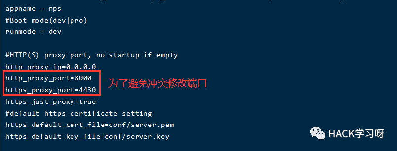
(2):重载配置文件
./nps reload这块加载失败了，目前还不清楚原因。
(3):启动NPS服务端
./nps start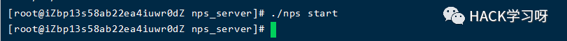
./nps stop #停止nps服务./nps restart #重启nps服务
(4):访问NPS服务端
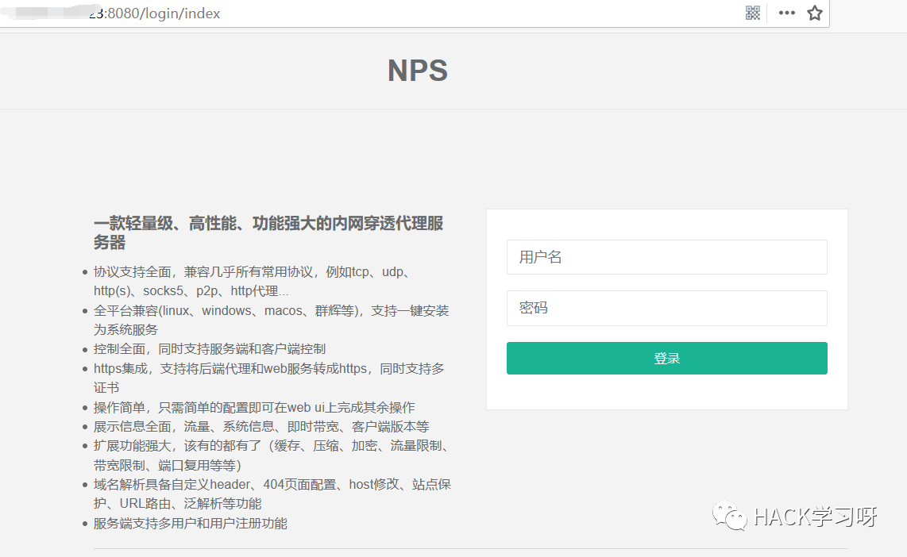
(5):使用账号密码登录成功
如下为nps控制台。

(6):新增一个客户端
这块新建的客户端主要是要使用生成的唯一验证密钥，通过这个唯一验证密钥才能将NPS的服务端和客户端连接起来，因此至少需要添加一个客户端。
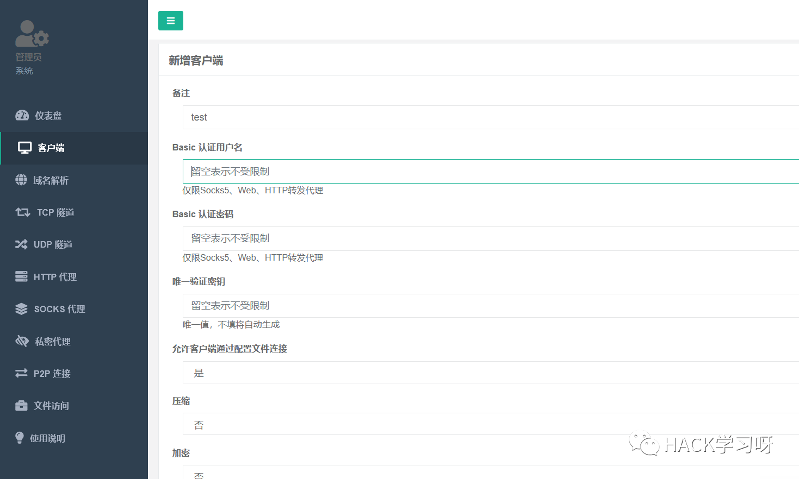
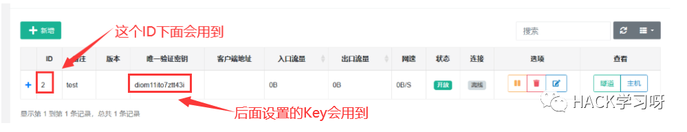
(7):添加SOCKS代理
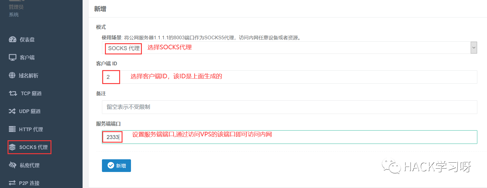
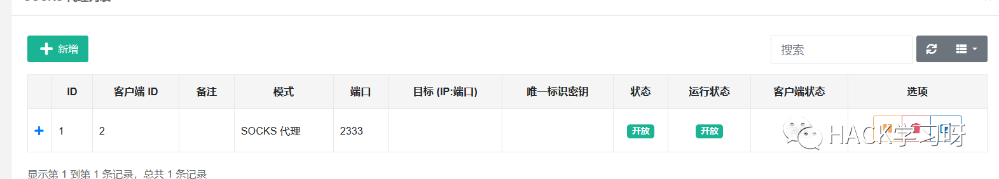
2.客户端配置
第一种方法:无配置文件
(1):将NPS对应版本的文件上传到内网主机中

(2):执行如下命令
Windows：npc.exe -server=ip:port -vkey=服务端生成的keyLinux：./npc -server=ip:port -vkey=服务端生成的key
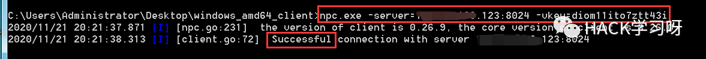
客户端连接成功。
(3):使用浏览器设置代理访问内网主机

成功访问到内网主机的通达OA，但是在笔者测试的过程中发现似乎NPS的速度和稳定性不如FRP。
第二种方法:有配置文件
此模式使用nps的公钥或者客户端私钥验证，各种配置在客户端完成，同时服务端web也可以进行管理
(1):将NPS对应版本的文件上传到内网主机中
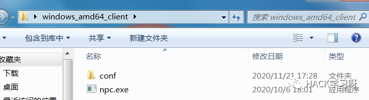
(2):修改配置文件
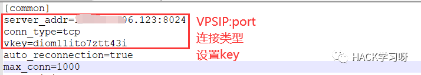
(3):执行如下命令
windows: npc.exe -config=npc配置文件路径linux: ./npc -config=npc配置文件路径
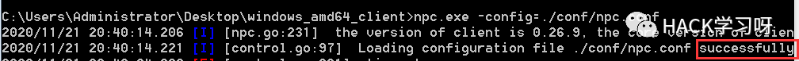
(4):浏览器通过代理成功访问目标主机
五、NPS其他场景使用
1.使用NPS代理SSH服务
(1):在内网主机上进行下载解压
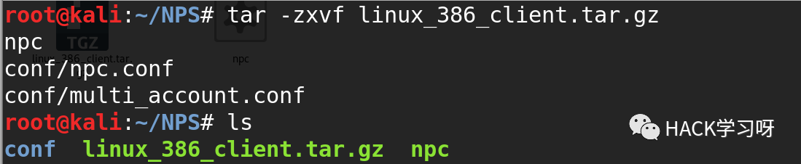
(2):在服务端创建一条TCP隧道
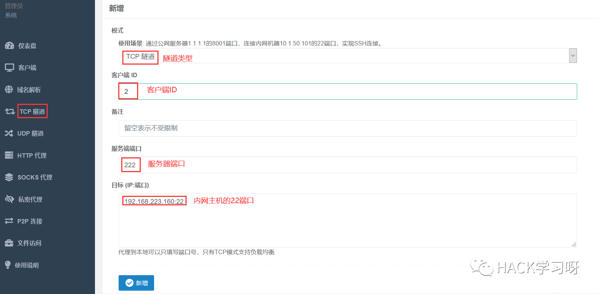
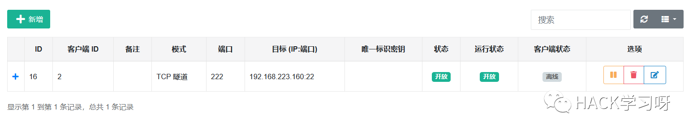
(3):启动客户端连接服务端
./npc -server=ip:port -vkey=服务端生成的key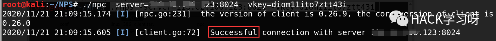
(4):使用另一台VPS访问该VPS的222端口连接内网主机
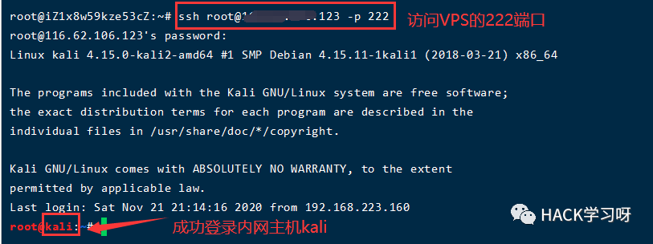
成功访问到内网主机。


点赞 在看 转发